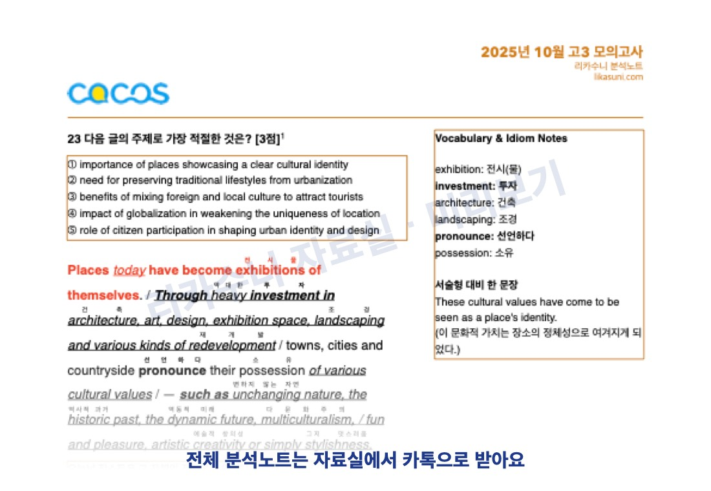

리카수니 분석노트 해설 · 이매동 코코스학원
2025 고3 10모 영어 23번 주제 해설·분석이에요. (2025 10월 고3 영어 모의고사 23번 · 글의 주제 · 3점 · 정답 ① importance of places showcasing a clear cultural identity)
정답 근거, 오답 거르는 법, 구문(the possession of which · be expected to be p.p. · 소유격 관계대명사 whose · not A nor B), 어휘를 정리했고 해설·분석노트 pdf 받는 곳은 글 아래에 있어요.
안녕하세요, 이매동 코코스학원 리카수니 원장입니다.
학생 요청으로 만든 분석노트를 바탕으로 정리했어요. 시험지를 옆에 펴 놓고 보시면 더 잘 보여요.
| 한눈에 보는 정답 · 시험: 2025년 10월 고3 전국연합학력평가 영어 · 번호: 23번 (다음 글의 주제로 가장 적절한 것, 3점) · 정답: ① importance of places showcasing a clear cultural identity (장소가 분명한 문화적 정체성을 보여 주는 것의 중요성) |
오늘날 장소는 건축·예술·조경 등에 투자해 스스로를 '전시'하고, 그 문화적 정체성이 쉽게 알아볼 수 있어야 방문객이 온다는 글이에요.
흐름은 장소 = 그 자체의 전시물 → 투자로 문화적 가치를 내세움 → 그 가치 = 장소의 정체성, 방문객을 끄는 핵심 → 정체성이 흐릿하면 목적지가 못 됨 → 그러니 '자신을 최대한 활용해야' 한다예요.
| · 근거 1: 마을·도시·시골은 막대한 투자를 통해 자연, 역사, 다문화, 재미, 멋스러움 같은 문화적 가치를 지니고 있음을 선언해요. · 근거 2: 이 문화적 가치는 장소의 정체성으로 여겨지고, 그것을 가지는 것이 방문객을 끄는 일의 핵심이에요. 정체성은 쉽게 알아볼 수 있어야(legible) 해요. · 근거 3: 정체성이 접근하기 어렵거나 혼란스러운 장소는 목적지가 되지 못하니, 장소는 '자신을 최대한 활용해야(make the most of themselves)' 해요. → 분명한 문화적 정체성을 보여 주는 것의 중요성, 정답 ①이에요. |
| · ② 도시화로부터 전통 생활 방식 보존 → the historic past 는 여러 문화적 가치 중 하나일 뿐, 핵심은 보존이 아니라 '전시'예요. · ③ 외국·지역 문화를 섞는 것의 이점 → multiculturalism 한 단어를 빌린 함정이에요. · ④ 세계화가 장소의 독특함을 약화 → 세계화는 나오지 않아요. · ⑤ 시민 참여의 역할 → urban design 은 나오지만 시민 참여 이야기는 없어요. 주제 문제는 글 끝 결론 문장(make the most of themselves)과 처음 핵심어(identity)를 함께 담은 선택지를 고르세요. |

▲ 2025 고3 10모 영어 23번 주제 해설·분석 pdf 분석노트 미리보기
| 1) 현재완료 have become / through + 명사 / such as 예시 2) come to be p.p. (~하게 되다) / 전치사 + 관계대명사 (the possession of which) → These cultural values have come to be seen as a place's identity, the possession of which is key to the important task of attracting visitors. (2025년 10월 고3 23번) 3) be expected to be p.p. / 독립부정사 to use ~ (~라는 말을 쓰자면) 4) 소유격 관계대명사 whose: Places whose identity seems inaccessible ~ 5) 주격 관계대명사 that + 수동 / not A nor B / 목적의 to부정사 To avoid such a fate / make the most of |
| 영어 | 뜻 |
|---|---|
| exhibition | 전시(물) |
| investment | 투자 |
| architecture | 건축 / landscaping 조경 |
| pronounce | 선언하다 |
| possession | 소유 |
| identity | 정체성 |
| access | 접근하다 / inaccessible 접근하기 어려운 |
| legible | 알아볼 수 있는 |
| contradictory | 모순된 |
| destination | 목적지 |
| visitable | 방문할 만한 |
| compose | 구성하다 |
| make the most of | ~을 최대한 활용하다 |
| niche | 꼭 맞는 역할, 틈새 |
| 서술형 대비 분석노트에 '서술형 대비 한 문장'(These cultural values have come to be seen as a place's identity. 이 문화적 가치는 장소의 정체성으로 여겨지게 되었다)과 영어 핵심 요약(Core Summary)을 해석과 함께 정리해 두었어요. |
| 📂 2025 고3 10모 영어 23번 해설·분석노트 pdf 받는 법 자료실 해설 페이지에서 정답 근거와 선택지 풀이를 볼 수 있고, 분석노트 pdf 는 카카오 로그인 후 카톡으로 받을 수 있어요. 회차 자료와 전과목 문제지·정답 pdf 는 같은 페이지 위쪽 회차 메뉴에서 볼 수 있어요. ▶ 2025 고3 10모 영어 23번 해설 https://data.likasuni.com/moe/go3/2025-10/eng/23/ |
Q. 2025 고3 10모 영어 23번 주제 해설·분석 정답은?
A. ① importance of places showcasing a clear cultural identity (장소가 분명한 문화적 정체성을 보여 주는 것의 중요성)
Q. 분석노트 pdf 는 어디서 받나요?
A. 리카수니 자료실(data.likasuni.com)에서 카카오 로그인 후 카톡으로 받을 수 있어요. 위 안내의 링크로 이동하세요.
이상 2025 고3 10모 영어 23번 주제 해설·분석 pdf 정리였어요. 궁금한 점은 댓글로 남겨 주세요.
| 🏫 이매동 코코스학원 안내 분당 이매동 코코스학원은 초등·중등·고등 영어와 수학을 가르쳐요. 모의고사·수능특강·내신 대비가 궁금하시면 편하게 문의해 주세요. · 홈페이지: https://www.cocosedu.co.kr/ · 주소: 경기 성남시 분당구 판교로 476 2층 |
#2025고310모영어 #2025고310모영어분석 #고310모영어 #고310모23번 #2025년10월모의고사 #2025년10월고3영어 #10모영어주제 #10월모의고사영어pdf #글의주제 #ofwhich #소유격관계대명사whose #영어분석노트 #이매동영어학원 #코코스학원 #리카수니